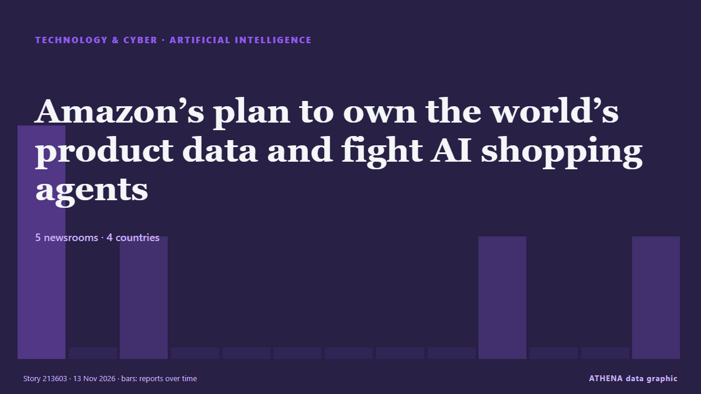

Τεχνητή νοημοσύνη
ΧορηγούμενοΠαρουσιάζεται από  Cybernetics and Artificial Intelligence Lab Welcome to the Cybernetics and Artificial Intelligence Laboratory, established at the Department of Business Administration of the National and Kapodistrian University of Athens. The lab is headed by Professor Dimitrios Thomakos. The lab aims to do research that can be published in top venues. Our research uses tools and methods of Artificial Intelligence, and lies in the following areas: - Forecasting - Decision making - Cyber security - Finance We are always looking forward to collaborating with exceptional students!
Cybernetics and Artificial Intelligence Lab Welcome to the Cybernetics and Artificial Intelligence Laboratory, established at the Department of Business Administration of the National and Kapodistrian University of Athens. The lab is headed by Professor Dimitrios Thomakos. The lab aims to do research that can be published in top venues. Our research uses tools and methods of Artificial Intelligence, and lies in the following areas: - Forecasting - Decision making - Cyber security - Finance We are always looking forward to collaborating with exceptional students!
| 1 Νοε | 0 |
|---|---|
| 2 Νοε | 0 |
| 3 Νοε | 0 |
| 4 Νοε | 0 |
| 5 Νοε | 0 |
| 6 Νοε | 0 |
| 7 Νοε | 0 |
| 8 Νοε | 1 |
| 9 Νοε | 4 |
| 10 Νοε | 6 |
| 11 Νοε | 6 |
| 12 Νοε | 4 |
| 13 Νοε | 3 |
| 14 Νοε | 0 |
Οι τίτλοι των ειδήσεων παρουσιάζονται στα αγγλικά, όπως δημοσιεύτηκαν.

Amazon’s plan to own the world’s product data and fight AI shopping agents
Amazon's World Product Graph aims to collect data on nearly every product sold worldwide. από Express Tribune
Anthropic targets valuation of up to $1.4 trillion for blockbuster IPO
OPINION: New Zealand investors may be limited to specified wholesale categories. από New Zealand Herald
Through the Lens: China’s Singles Day shopping festival
AI chatbots can research products, make recommendations and complete purchases, while interim Singles’ Day figures show sales rose 2.4%. από Free Malaysia Today
Critical Apache HTTP/2 Flaw Could Let Unauthenticated Attackers Execute Code Remotely
A critical flaw in Apache HTTP Server's HTTP/2 module, mod_http2, can let a remote attacker run code on the server. από The Hacker News
FirstFT: Anthropic bankers prepare to increase IPO valuation to $1.5tn
Also in today’s newsletter: Hegseth survives impeachment vote and more on Alice Huang’s background. από Financial Times - Global economy
Foxconn beats forecasts with Q3 profit jump
The Taiwanese tech giant has gone beyond making low-margin iPhones to producing AI servers for US tech titan Nvidia, as well as electric vehicles and robots. από Free Malaysia Today
Meta is losing its longtime head of infrastructure
Santosh Janardhan, who originally joined the company in 2009, will be stepping down from his role. από TechCrunch
Commentary: FOMO on mega IPOs like Anthropic? Read the filing, not the hype
Anthropic’s upcoming IPO could fuel FOMO for many investors but excitement over a company’s prospects should not overshadow the fundamentals of investing, says Chez Anbu, head of wealth advisory at… από CNA (Channel NewsAsia)
Meta launches Muse Ember for repetitive AI workloads
Meta has launched Muse Ember, its smallest model, to handle repetitive tasks at lower cost. από DigiTimes Asia
Reddit Reviews uses AI to summarise what users say about 10,000 products
Reddit is turning what its users say about products into AI-made reviews. από The Next Web
OpenAI 3Q26 revenue tops US$10B as losses persist
OpenAI's revenue reached US$10 billion in the third quarter of 2026, up nearly 50% quarter-on-quarter, driven by demand from enterprises and new model products. από DigiTimes Asia
Meta expands AI age checks worldwide on Instagram
New technology aims to identify underage users with adult birth dates and strengthen protections for teenagers across the platform. από News of Bahrain
US, China to cooperate on managing AI risks: Bessent
'We should harbour no illusions about the differences between the United States and China,' says US Treasury secretary. από Express Tribune
Peru unveils world’s largest statue honoring Pope Leo XIV
Peru.- The world’s largest statue honoring Pope Leo XIV, standing 14 meters tall, was unveiled Monday in Peru less than 48 hours before the pontiff begins his apostolic visit to the country. από Dominican Today
Anthropic launches new Claude Fable 5.2, Mythos models before IPO
Dubai: On November 9, Anthropic unveiled two new artificial intelligence models, Claude Fable 5.2 and Claude Mythos 5.2. από Gulf News
Anthropic takes on Google and Microsoft with Claude Sheets
The company also has a new whiteboard app. από Engadget
SoftBank Group, Grab, PETROS commit US$1.85 billion to Malaysian AI infrastructure
SoftBank Group, Grab, and Petroleum Sarawak Berhad (PETROS) have entered into joint development agreements to deploy US$1.85 billion in initial seed capital for large-scale artificial intelligence… από DigiTimes Asia